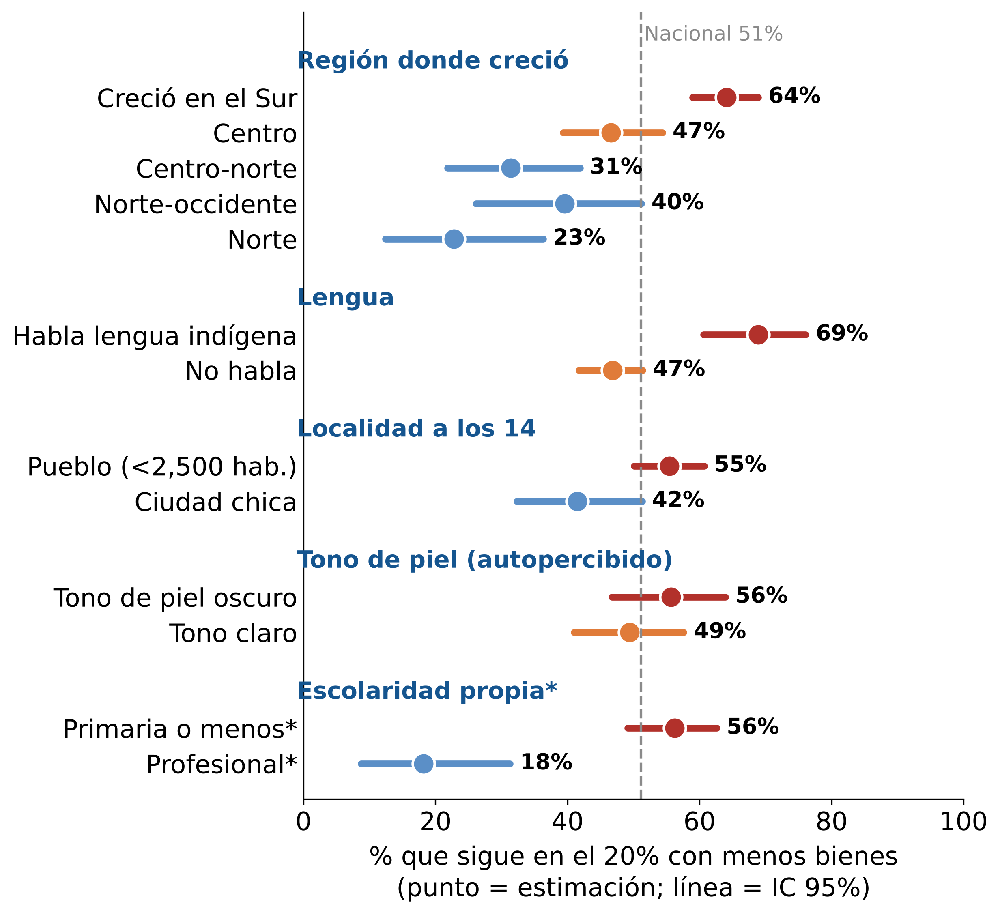
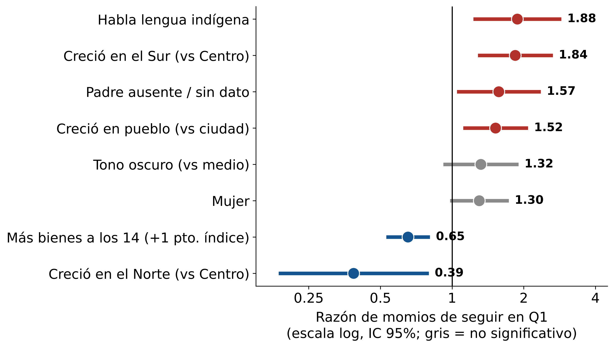
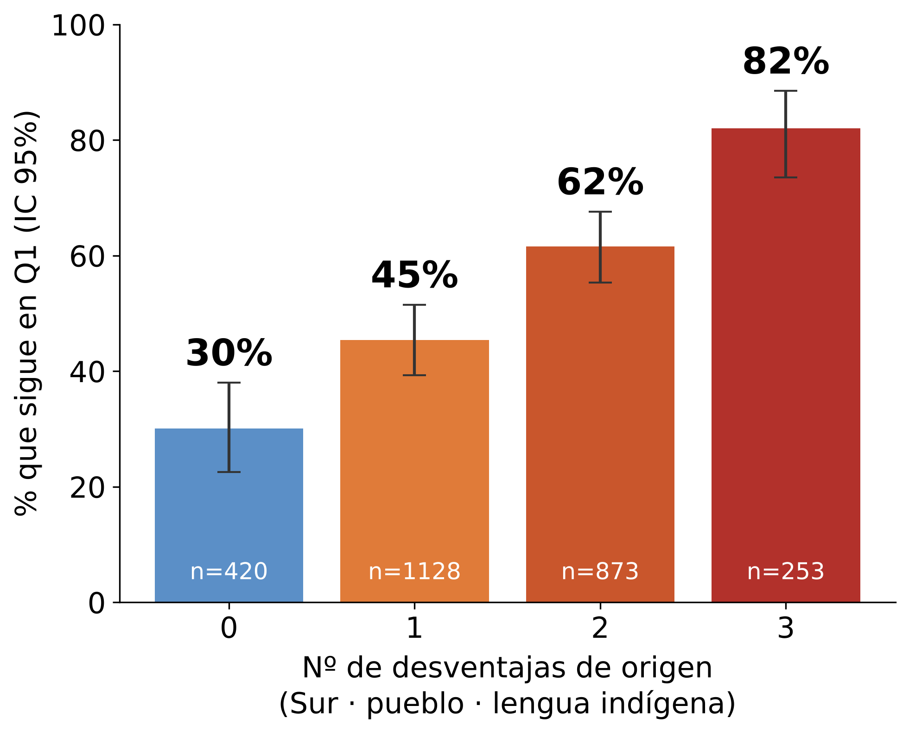
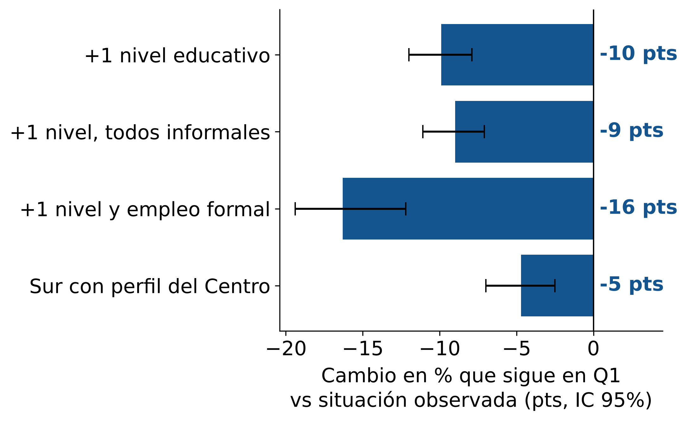
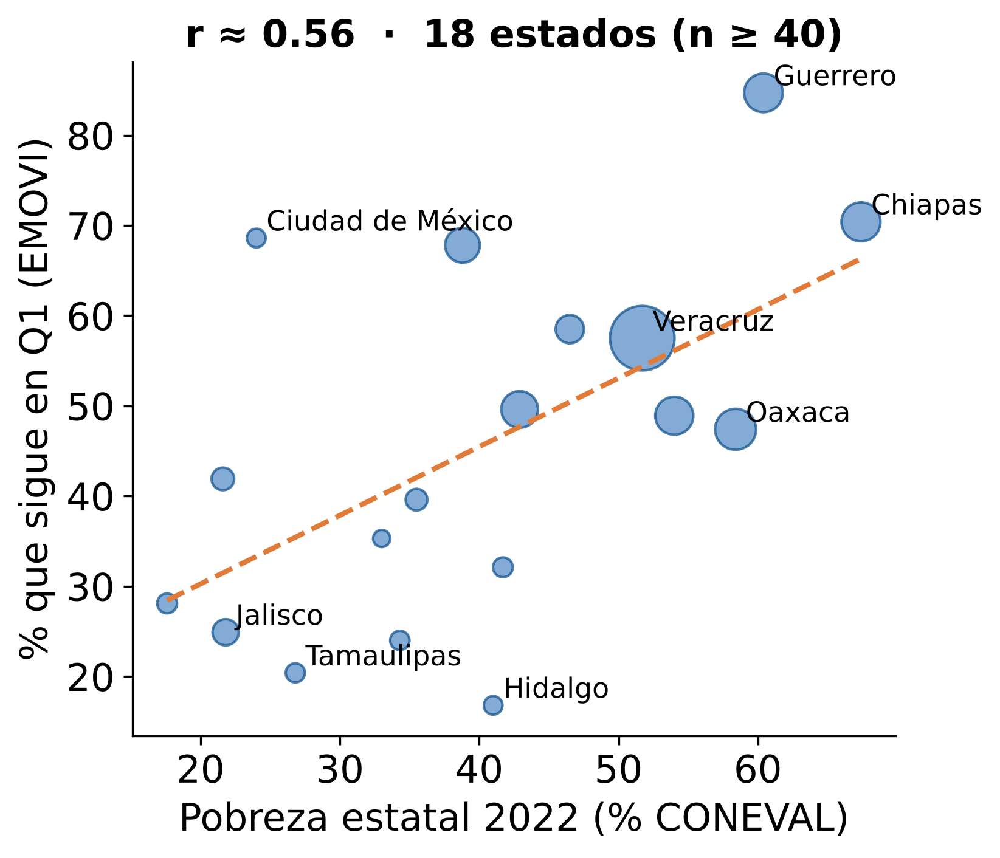

1. Contexto
La movilidad social intergeneracional mide cuánto cambia la posición socioeconómica de una persona respecto al hogar en que creció. No es lo mismo que pobreza (carencias en un momento dado) ni que ingreso (un flujo de dinero): es una medida de igualdad de oportunidades.
En México, el CEEY ha documentado que el origen pesa mucho y que las brechas son regionales [1, 2]; la literatura internacional describe una "geografía de las oportunidades" [3] y, en México, brechas por tono de piel y etnicidad [4].
Ecosistema de datos: CEEY (ESRU-EMOVI 2023: origen y destino de la misma persona), CONEVAL (pobreza 2022) e INEGI (ENIGH y ENOE 2022) [1, 5, 6].
¿Por qué ML? Permite evaluar muchas circunstancias a la vez, medir cuánto del destino predicen y comprobar si los resultados son estables, además de los modelos estadísticos clásicos.
2. Problemática
Problema: no basta con saber cuántas personas son pobres hoy; importa saber si la desventaja se hereda y qué circunstancias de origen la acompañan.
Objetivo: medir esa persistencia y comparar modelos estadísticos y de ML que identifiquen las circunstancias asociadas, sin atribuir causalidad.
Alcance: 25–64 años (60 millones representados); movilidad relativa intergeneracional; nacional y regional.
3. Propuesta
Tres miradas complementarias sobre los mismos datos:
- Descriptiva — matriz de transición ponderada: ¿cuánto persiste?
- Explicativa — regresión logística con errores por diseño muestral: ¿qué se asocia y con qué magnitud?
- Predictiva — 6 modelos comparados: ¿cuánto del destino explican las circunstancias de origen?
Aporte: además de describir, mide el límite de lo que el origen explica y verifica la robustez con una auditoría independiente. Es una herramienta de análisis, no una intervención ni un sistema para seleccionar personas.
4. Metodología
5. Resultados





| Prueba (n = 535) | AUC | Exact. bal. | F1 | Brier |
|---|---|---|---|---|
| Base mayoritaria | 0.50 | 0.50 | 0.68 | 0.250 |
| Regresión logística ★ | 0.72 | 0.67 | 0.68 | 0.214 |
| Random forest | 0.72 | 0.65 | 0.68 | 0.219 |
| Gradient boosting | 0.72 | 0.66 | 0.67 | 0.213 |

